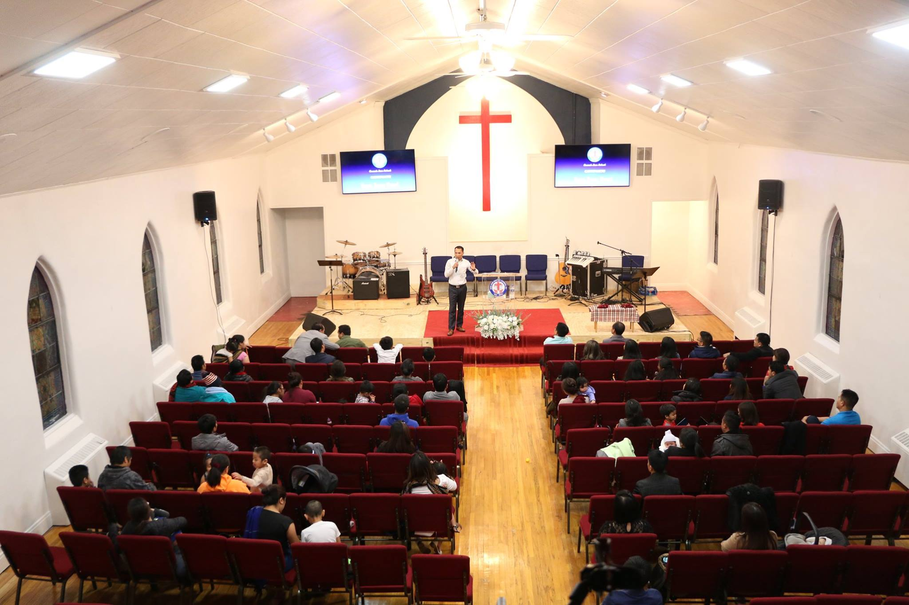

Sermons
There are a wide variety of sermons at our Church, and most of them led by our Pastor Van and Guest Speakers

Sunday sermons are given by Reverend Van Thuam Cin. He is the Pastor of our Church. A series of his sermons can be found on our Facebook page. Pastor Van works extremely hard to provide new sermons every week.
We often invite Guest speakers to come and share words of God with the Congregation.
Most of our recorded sermons will be posted on this website soon...